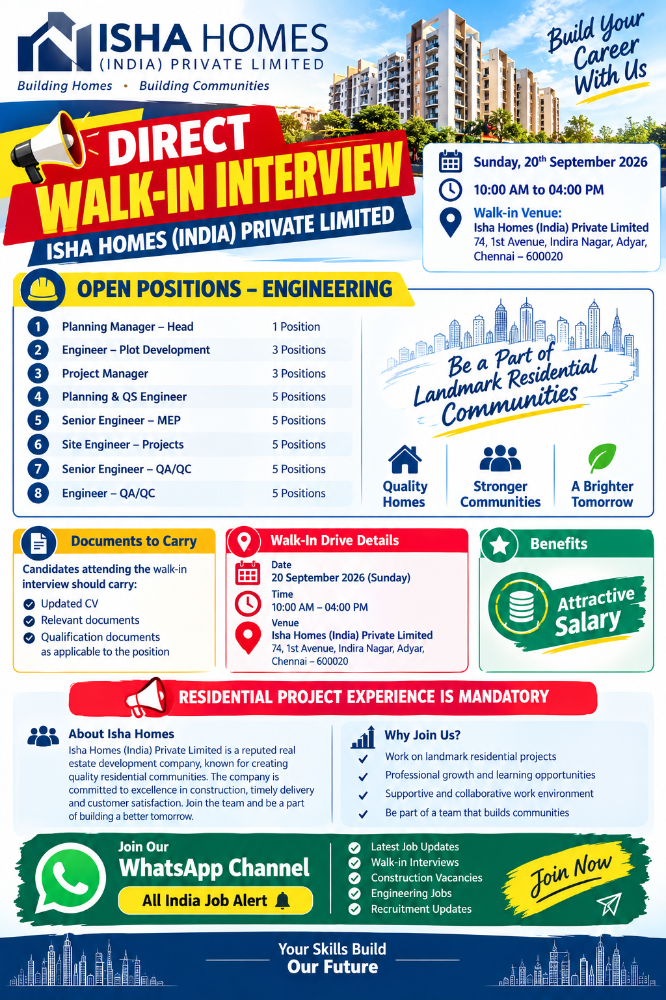

Direct Walk-In Interview | Chennai | Engineering & Construction Jobs

Isha Homes (India) Private Limited has announced a direct walk-in interview drive for experienced engineering professionals in Chennai. The recruitment opportunity is focused on professionals who have relevant experience in residential construction and project execution. Candidates who have worked on residential projects and possess the required technical experience can attend the walk-in interview scheduled for Sunday, 20 September 2026.
This recruitment drive provides opportunities across planning, project management, quantity surveying, MEP, site execution and quality assurance/quality control functions. A total of several positions are available across different engineering departments, making this recruitment relevant for experienced Civil, MEP and QA/QC professionals looking for opportunities in Chennai.
The company has specifically mentioned that residential project experience is mandatory. Therefore, candidates should carefully check the experience requirements of the position they are interested in before attending the interview. Applicants should also carry an updated CV and relevant qualification and experience documents.
| Particular | Details |
|---|---|
| Company | Isha Homes (India) Private Limited |
| Interview Type | Direct Walk-In Interview |
| Date | Sunday, 20 September 2026 |
| Time | 10:00 AM to 04:00 PM |
| Location | Chennai, Tamil Nadu |
| Experience Requirement | Relevant Residential Project Experience |
Isha Homes (India) Private Limited
74, 1st Avenue,
Indira Nagar, Adyar,
Chennai – 600020
Candidates planning to attend the interview should reach the venue during the scheduled interview hours. It is advisable to arrive with sufficient time for registration and document verification.
Vacancies: 1 Position
The Planning Manager – Head position is intended for an experienced professional capable of handling project planning and coordination responsibilities. The role may involve monitoring project schedules, coordinating with project teams, tracking progress and supporting timely project execution. Candidates with strong residential project planning experience should consider this opportunity.
Vacancies: 3 Positions
The Engineer – Plot Development position is suitable for engineering professionals involved in development and execution activities related to residential projects. Candidates should have practical site knowledge and an understanding of construction activities, coordination and project requirements.
Vacancies: 3 Positions
Project Managers will be responsible for managing project execution and coordinating multiple construction activities. Relevant residential construction experience is required. Candidates should be comfortable handling site teams, planning activities, coordination and project progress.
Vacancies: 5 Positions
Planning & QS Engineers will work with planning and quantity surveying functions. Responsibilities may include quantity monitoring, project planning, measurement, documentation, billing coordination and schedule tracking. Candidates with residential project experience and relevant technical knowledge can apply.
Vacancies: 5 Positions
Senior Engineer – MEP positions are available for professionals experienced in mechanical, electrical and plumbing-related project activities. Candidates should have practical experience in coordinating MEP works within residential construction projects and working with site execution teams.
Vacancies: 5 Positions
Site Engineers will be involved in day-to-day project execution and site coordination. The position is suitable for candidates who have practical construction experience, knowledge of site activities and the ability to coordinate with engineers, supervisors, contractors and other project teams.
Vacancies: 5 Positions
Senior QA/QC Engineers will be involved in quality-related activities associated with construction projects. The role may include quality inspections, documentation, coordination with execution teams and monitoring construction work according to project requirements.
Vacancies: 5 Positions
Engineer – QA/QC positions are available for professionals interested in construction quality control and quality assurance activities. Candidates should have relevant residential project experience and be familiar with site quality procedures, inspections and project documentation.
The recruitment drive covers several important functions within residential construction projects. Planning professionals can explore opportunities in project scheduling and coordination, while project management professionals can apply for project execution roles. Quantity surveying candidates can explore Planning & QS positions, and MEP professionals can apply for Senior Engineer – MEP opportunities.
The drive also includes Site Engineer positions for candidates interested in direct project execution. QA/QC professionals have opportunities at both Senior Engineer and Engineer levels. This range of positions means that candidates from different areas of residential construction may find a suitable role according to their experience and technical background.
One of the most important requirements mentioned in this recruitment announcement is residential project experience. Candidates should therefore make sure that their CV clearly mentions their previous residential construction projects, job responsibilities, designation, total experience and technical expertise.
Candidates should avoid submitting an incomplete CV. A good resume should clearly show project names or project type, previous employers, designation, years of experience, qualification and major responsibilities. Professionals working in planning, QS, MEP, project management, site execution and QA/QC should highlight their relevant residential project experience.
This recruitment is primarily suitable for experienced engineering and construction professionals with relevant residential project exposure. Candidates should check their educational qualifications, experience and technical background before applying for a specific position.
Professionals currently working in construction companies, real estate development firms, residential project contractors and related engineering organizations can consider applying if their experience matches the requirements. Candidates should present their experience clearly during the interview and carry supporting documents for verification.
The recruitment announcement mentions an attractive salary as a benefit. The opportunity also allows experienced professionals to work in residential construction and landmark community development projects. Candidates can gain exposure to project planning, execution, MEP coordination, quality control and other construction functions depending on the selected position.
Working in a residential project environment can provide professionals with practical experience in project coordination, construction execution, quality management, planning and engineering operations. Candidates should discuss salary, role responsibilities, project location, joining requirements and other employment terms directly with the recruitment team during the selection process.
A walk-in interview allows candidates to meet the recruitment team directly, so preparation is important. Candidates should revise their previous project experience and be ready to explain their responsibilities. Engineers may be asked about their technical knowledge, project coordination experience, drawings, planning, quality procedures, MEP coordination or site execution depending on the position.
Candidates should also keep their resume updated and ensure that their contact details are correct. It is useful to carry multiple copies of the resume when attending a walk-in interview. Candidates should reach the venue during the stated interview time and follow the instructions provided by the recruitment team.
Interested and eligible candidates can apply for the available positions by attending the direct walk-in interview at the Isha Homes office in Chennai.
Candidates may also send their updated resume to the official recruitment email mentioned in the recruitment information:
Email: recruitment@ishahomes.com
Mobile: +91-9940114602
Candidates should mention the position they are applying for and ensure that their CV highlights relevant residential project experience.
| Details | Information |
|---|---|
| Interview | Direct Walk-In Interview |
| Date | 20 September 2026, Sunday |
| Time | 10:00 AM – 04:00 PM |
| Venue | Isha Homes (India) Private Limited, 74, 1st Avenue, Indira Nagar, Adyar, Chennai – 600020 |
| recruitment@ishahomes.com | |
| Mobile | +91-9940114602 |
| Experience | Residential Project Experience Mandatory |
Candidates are advised to verify the position, eligibility, interview schedule and other recruitment details before travelling to the venue. Recruitment requirements can change depending on project requirements. The information on this page is based on the recruitment details provided for the Isha Homes walk-in interview.
Candidates should never pay money to any person promising guaranteed selection or employment. Selection should be based on the company's recruitment process and candidate suitability. Always use the recruitment contact details provided in the job announcement for clarification.
Get the latest Government Jobs, Private Jobs, Walk-In Interviews, Construction Jobs, Engineering Jobs and other recruitment updates directly on WhatsApp.
Join All India Job Alert WhatsApp ChannelIsha Homes (India) Private Limited's direct walk-in recruitment drive provides multiple opportunities for experienced professionals in residential construction. The available positions cover planning, project management, plot development, quantity surveying, MEP, site execution and QA/QC. Candidates with relevant residential project experience should carefully review the positions and attend the interview with an updated CV and necessary documents.
The walk-in interview is scheduled for Sunday, 20 September 2026, from 10:00 AM to 04:00 PM at Isha Homes (India) Private Limited, 74, 1st Avenue, Indira Nagar, Adyar, Chennai – 600020. Candidates who cannot attend immediately may also send their updated resume to recruitment@ishahomes.com and contact +91-9940114602 for further recruitment-related information.
For candidates searching for construction and engineering opportunities, this recruitment drive includes several job categories under one hiring campaign. Before applying, candidates should ensure that their qualifications and previous project experience match the position. A properly prepared resume, relevant documents and clear knowledge of previous project responsibilities can help candidates present their professional experience during the recruitment process.